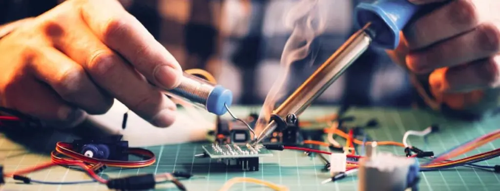

Entrar en un mercado HVAC maduro, donde aparentemente todo ya está inventado, exige una mirada diferente. La verdadera innovación no surge de reinventar lo existente, sino de cuestionar cómo y por qué se hacen las cosas. Analizar procesos, replantear arquitecturas de control y detectar ineficiencias ocultas es clave para aportar valor real en un sector tradicional.
1 de noviembre de 2025 · 2 minutos de lectura

Muchos sistemas siguen basándose en decisiones heredadas: controles sobredimensionados, configuraciones poco flexibles y soluciones cerradas que dificultan la adaptación. Revisar estos supuestos permite simplificar, reducir costes, mejorar el mantenimiento y extender la vida útil de los equipos sin comprometer fiabilidad ni normativa.
Mi enfoque parte de combinar conocimiento profundo del HVAC con nuevas tecnologías electrónicas, software y datos. Buscar nuevos puntos de vista permite transformar la electrónica de control en una capa estratégica: más parametrizable, más transparente y alineada con el uso real del sistema. Esto se traduce en mayor eficiencia energética, mejor diagnóstico y una integración digital más natural.
Despertar el sector implica pasar de soluciones cerradas a sistemas abiertos, de controles rígidos a lógicas adaptativas y de productos aislados a ecosistemas conectados. La electrónica y el firmware dejan de ser solo soporte funcional para convertirse en herramientas de diferenciación, capaces de acompañar la evolución del producto y del mercado.
Aún queda mucho margen para mejorar cómo se diseñan, configuran y utilizan los sistemas HVAC. Ahí es donde una visión técnica crítica, orientada a producto y apoyada en innovación aplicada, puede marcar una diferencia real y sostenible.
Hacer crecer una empresa OEM en el sector HVAC requiere ir más allá del desarrollo técnico y entender profundamente a todos los actores involucrados. El crecimiento sostenible se logra cuando ingeniería, negocio y mercado trabajan alineados, y cuando el fabricante mantiene un contacto constante con la realidad del cliente final.
Una estrategia clave es interactuar activamente con instaladores, integradores y usuarios finales para comprender cómo se utilizan realmente los equipos, qué problemas aparecen en campo y dónde se generan fricciones. Esta información, correctamente canalizada, permite definir productos más acertados, reducir incidencias y anticipar necesidades futuras.
Trabajar de forma cercana con el fabricante es fundamental para traducir esas necesidades en soluciones viables. Esto implica diseñar plataformas electrónicas y de control flexibles, capaces de adaptarse a distintos mercados, normativas y aplicaciones sin multiplicar la complejidad industrial.
Otra estrategia consiste en transformar la electrónica y el software en herramientas de diferenciación. La capacidad de parametrizar funciones, actualizar comportamientos y ofrecer variantes de producto sin rediseños profundos permite responder más rápido al mercado y ampliar el catálogo de forma eficiente.
Finalmente, el crecimiento de una empresa OEM se apoya en una visión a largo plazo: estandarización inteligente, reutilización de desarrollos, reducción del coste total de propiedad y mejora continua basada en datos reales. Cuando el desarrollo técnico se alinea con las necesidades del cliente final, el producto deja de ser solo un componente del sistema y se convierte en un verdadero motor de crecimiento para la empresa.